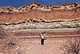

stratum

Has synonym(s): layer
Definition: In geology and related fields, a stratum (PL: strata) is a layer of rock or sediment characterized by certain lithologic properties or attributes that distinguish it from adjacent layers from which it is separated by visible surfaces known as either bedding surfaces or bedding planes. Prior to the publication of the International Stratigraphic Guide, older publications have defined a stratum as either being either equivalent to a single bed or composed of a number of beds; as a layer greater than 1 cm in thickness and constituting a part of a bed; or a general term that includes both bed and lamina.
Source: Wikipedia
Wikipedia Page (Something wrong with this association? Let us know.)
Wikidata Page (Something wrong with this association? Let us know.)
Occurs in: